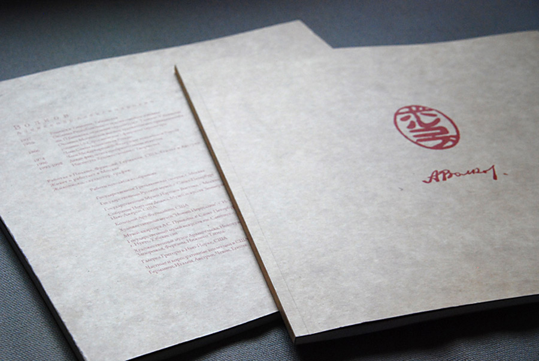
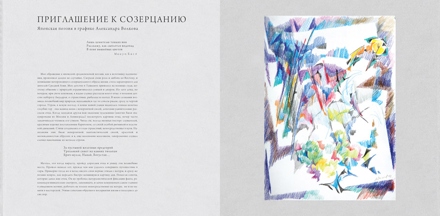
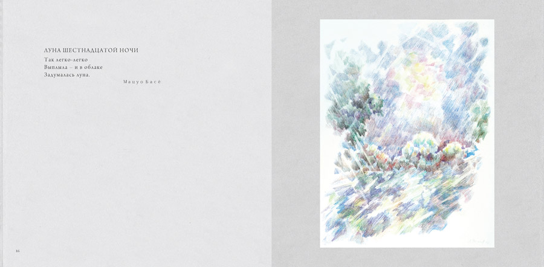
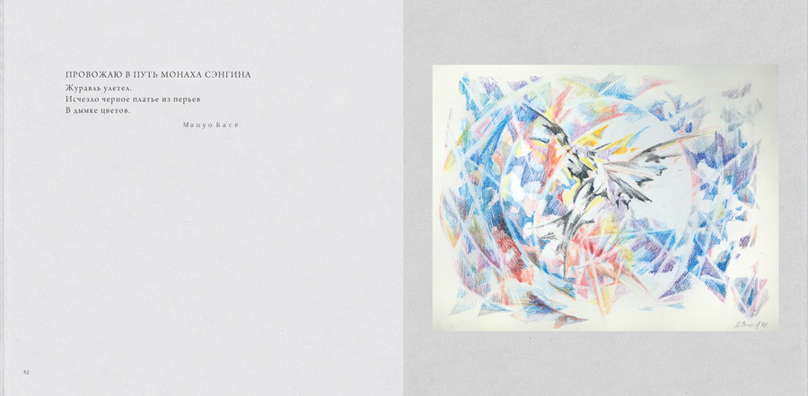
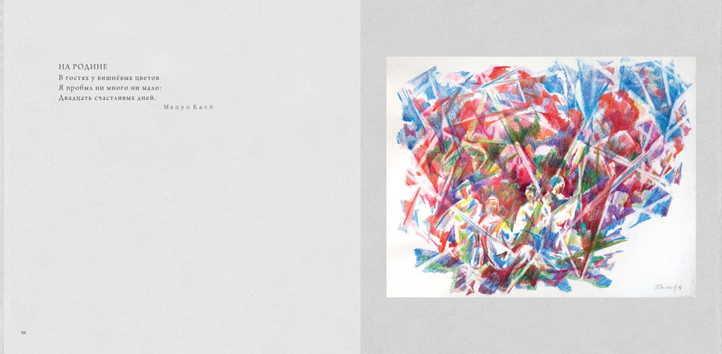

Приглашение к созерцанию
Японская поэзия в графике Александра Волкова
Художественный альбом графической серии работ Александра Александровича Волкова, посвященной японской поэзии и выполненной цветными карандашами на белой бумаге. Весна-осень 1998 года.




